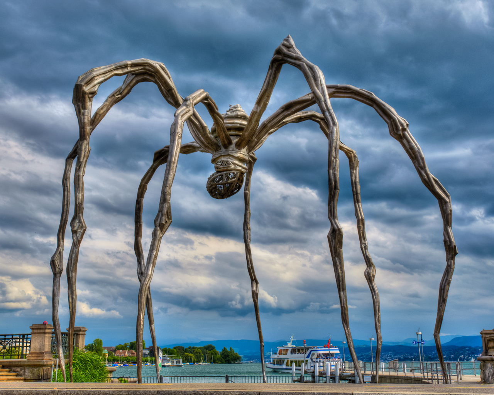
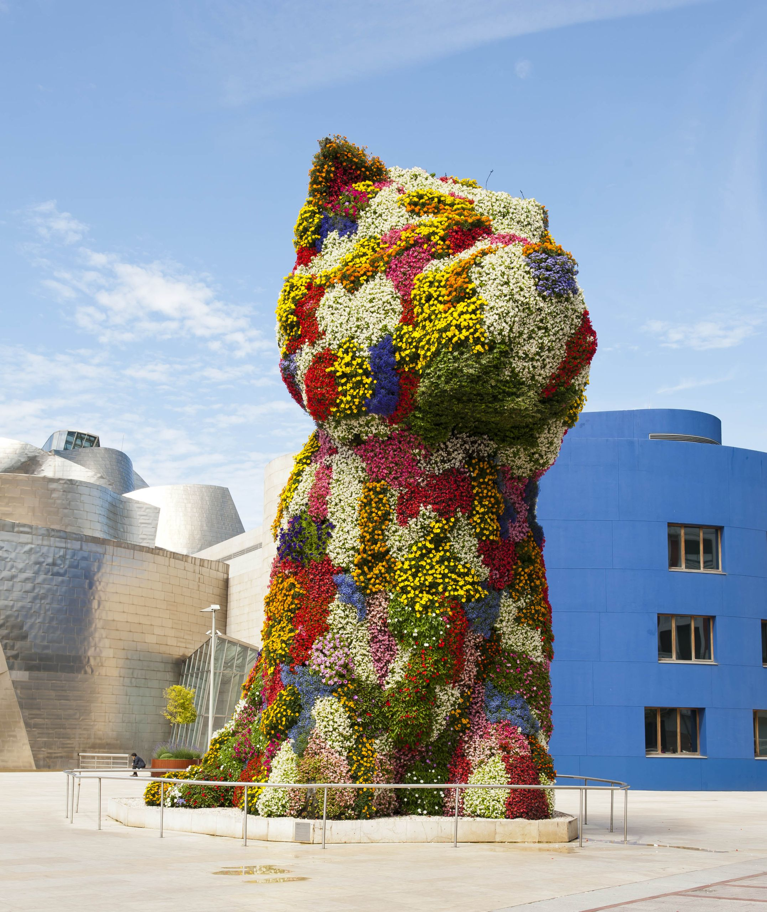
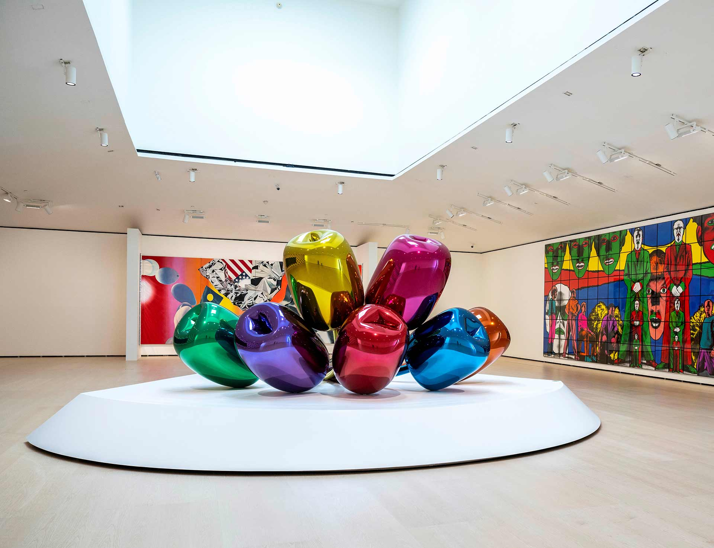

"Maman" de Louise Bourgeois

"Maman" est une sculpture emblématique de l'artiste Louise Bourgeois, représentant une araignée géante. Cette œuvre symbolise la maternité, la protection et la fragilité. Elle est l'une des pièces les plus célèbres du Musée Guggenheim Bilbao.
- Année: 1999
- Matériau: Bronze, acier inoxydable, marbre
- Dimensions: 10 m de haut
"Puppy" de Jeff Koons

"Puppy" est une sculpture monumentale de Jeff Koons, représentant un chien en fleurs. Cette œuvre est un symbole de joie et d'innocence, et elle est située à l'entrée du musée, accueillant les visiteurs avec son charme coloré.
- Année: 1999
- Matériau: Acier inoxydable, peint
- Dimensions: 2,5 m de haut
"Tulips" de Jeff Koons

"Tulips" est une sculpture de Jeff Koons représentant un bouquet de tulipes en acier inoxydable peint. Cette œuvre est une célébration de la beauté et de la nature, et elle fait partie de la collection permanente du musée, attirant les visiteurs par ses couleurs vives et sa forme ludique.
- Année: 1999
- Matériau: Acier inoxydable, peint
- Dimensions: 2,5 m de haut